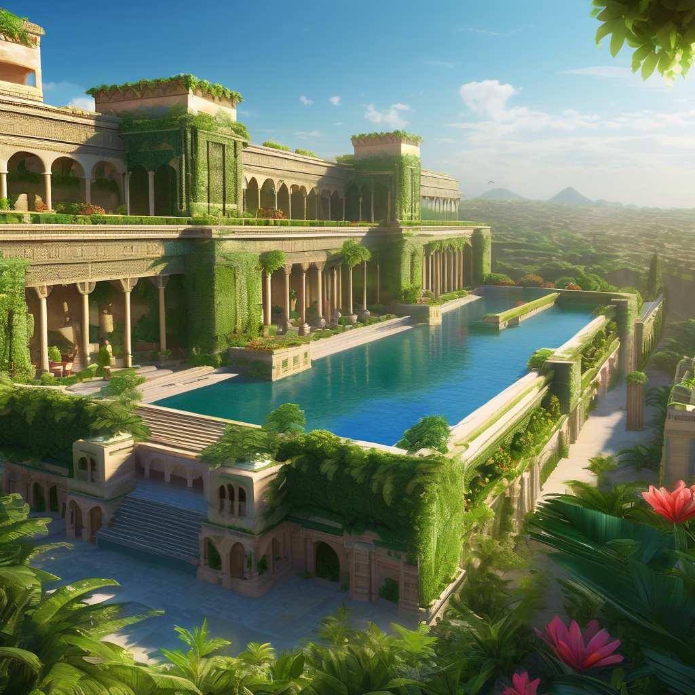

4 - Jardins Suspensos da Babilônia

Apesar de haver descrições detalhadas em muitos textos antigos, tanto gregos quanto romanos, nenhuma outra maravilha é mais misteriosa do que os Jardins Suspensos da Babilônia. Pois não existem evidências conclusivas de que realmente tenham existido. Caso seja real, apresentava um nível de engenharia muito à frente de seu tempo. Manter um jardim exuberante e vivo no deserto, que hoje é o Iraque, teria sido uma grande façanha.